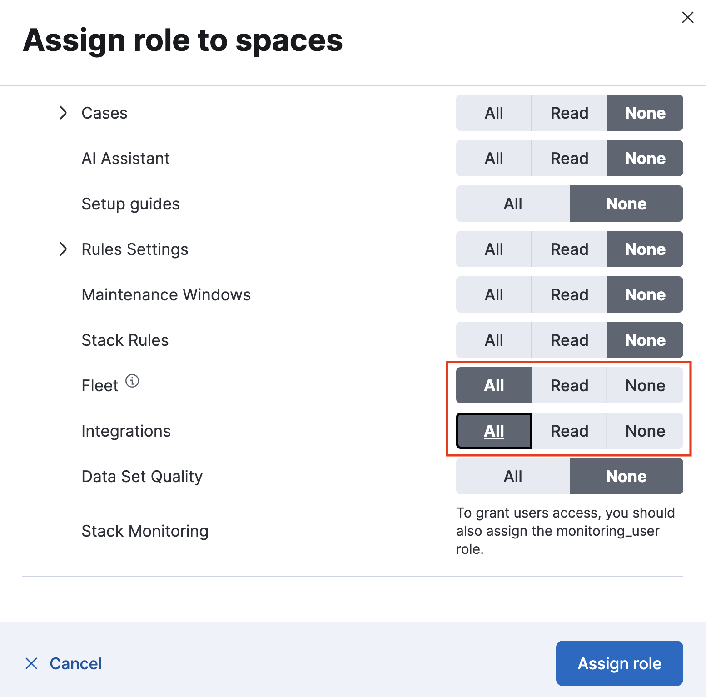
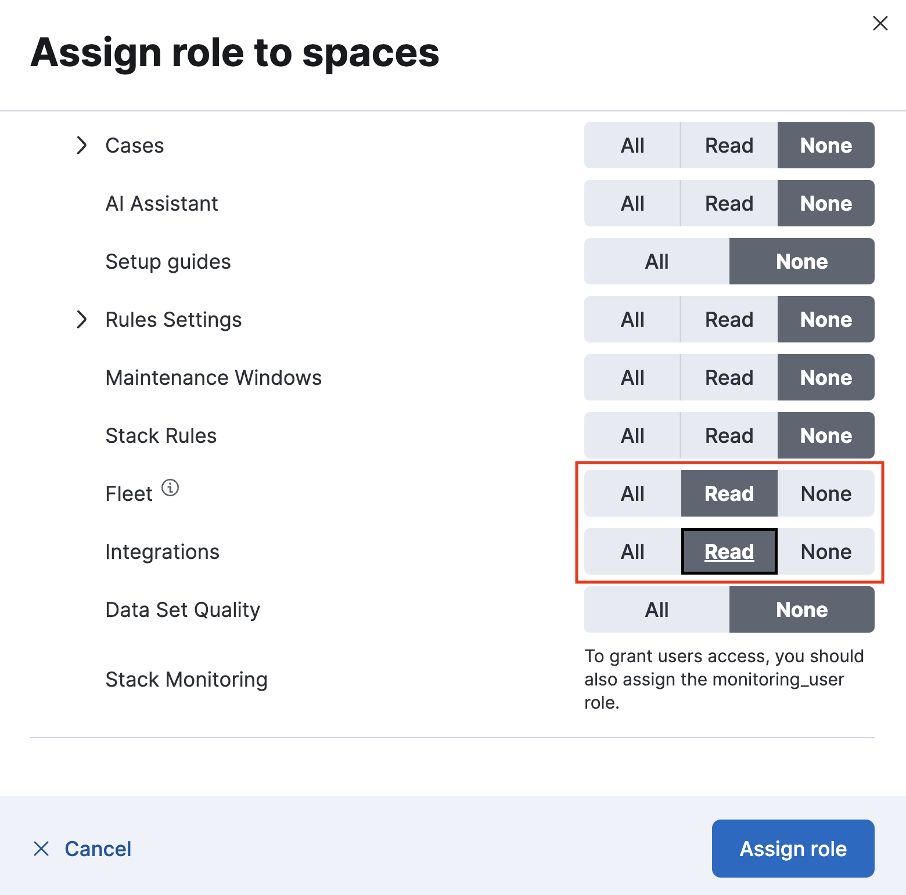

Required roles and privileges
editBeginning with Elastic Stack version 8.1, you no longer require the built-in elastic superuser credentials to use Fleet and Integrations.
Assigning the Kibana feature privileges Fleet and Integrations grants access to these features:
-
all - Grants full read-write access.
-
read - Grants read-only access.
-
none - No access is granted.
Take advantage of these privilege settings by:
Built-in roles
editElasticsearch comes with built-in roles that include default privileges.
-
editor -
The built-in
editorrole grants the following privileges, supporting full read-write access to Fleet and Integrations:-
Fleet:
all -
Integrations:
all
-
Fleet:
-
viewer -
The built-in
viewerrole grants the following privileges, supporting read-only access to Fleet and Integrations:-
Fleet:
read -
Integrations:
read
-
Fleet:
You can also create a new role that can be assigned to a user, in order to grant more specific levels of access to Fleet and Integrations.
Create a role for Fleet
editTo create a new role with access to Fleet and Integrations:
- In Kibana, go to Management → Stack Management.
- In the Security section, select Roles.
- Select Create role.
- Specify a name for the role.
- Leave the Elasticsearch settings at their defaults, or refer to Security privileges for descriptions of the available settings.
- In the Kibana section, select Assign to space.
- In the Spaces menu, select * All Spaces. Since many Integrations assets are shared across spaces, the users need the Kibana privileges in all spaces.
- Expand the Management section.
-
Choose the access level that you’d like the role to have with respect to Fleet and integrations:
-
To grant the role full access to use and manage Fleet and integrations, set both the Fleet and Integrations privileges to
All. -
Similarly, to create a read-only user for Fleet and Integrations, set both the Fleet and Integrations privileges to
Read.
-
Once you’ve created a new role you can assign it to any Elasticsearch user. You can edit the role at any time by returning to the Roles page in Kibana.